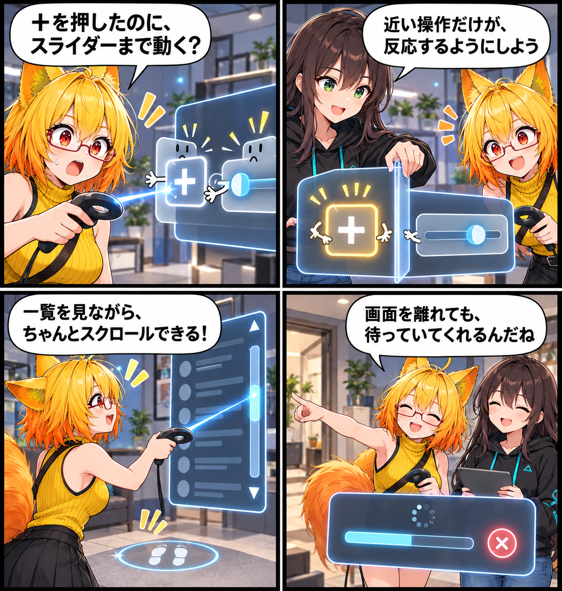

手元の操作を、迷わせない日
VRメニューで、指しているUIだけを確実に操作でき、一覧や読込中の導線を迷わず使えるようにしました。
main です。集計終了時点のHEADは ea4e1052b53c6e61870a81810422eeb41c81881c、期間内コミットは8件でした。未コミット差分は期間内に実装された事実を確定できないため、実績には含めていません。
近い操作だけに届くように
スライダーの行にある＋／－ボタンが親スライダーにも届いてしまう入力経路を見直し、もっとも近い操作部品だけが入力を受け取るようにしました。スライダーの値も、行全体ではなく実際のHandle領域を基準に計算します。無効化されたUIやRaycastを受けないUIも、VR側で正しく操作できない状態として扱います。
一覧を見ながら、移動しない
VRでUIを指している間は、その手のスティック入力を一覧スクロールに使い、移動や旋回と二重に反応しないようにしました。Physics入力側にもスクロールバーの押下・ドラッグを追加し、Handleの大きさに応じて両端まで操作できます。
読込は画面を離れても続く
アバターの読込は、ライブラリ画面を閉じただけで中止せず、専用の中止操作を使う方式へ変更しました。背景読込には進行・失敗表示と中止手段を用意し、読込中の無効な操作を抑えています。前面の編集小窓がメニューの値ボタンを遮る問題も、メニューを開く間だけ小窓を閉じ、閉じた後に表示を戻すことで解消しました。
検査した範囲
実Prefabを使った自動テストは53件すべて成功し、実操作検査は67/67、画面遷移・表示検査は70/70で完了しました。これはDesktop Play Modeでの検査であり、実機HMDのトラッキング・装着時の見やすさ・コントローラー入力は未検証です。
4コマの話
今回は、＋／－を押したつもりが別の操作まで動く「取り合い」から始めました。手元の一本のレーザーが、いま触れているものを優先する。派手さより、迷わず次の操作へ進める感覚を締めにしています。
まとめ
近いUIだけが入力を受け、UIを指す手はスクロールを優先し、読込は画面を離れても続けられる。VR操作を、次の一手へ迷わず進める導線に整えました。